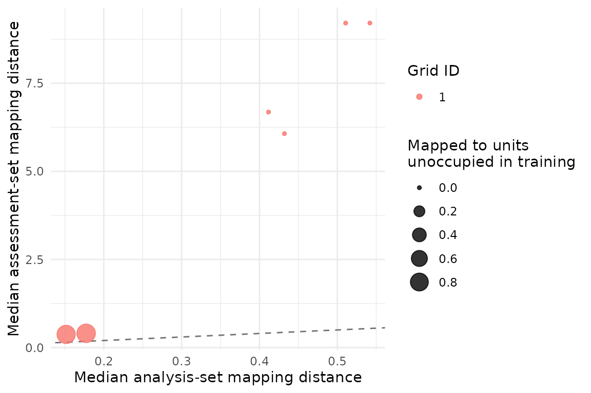
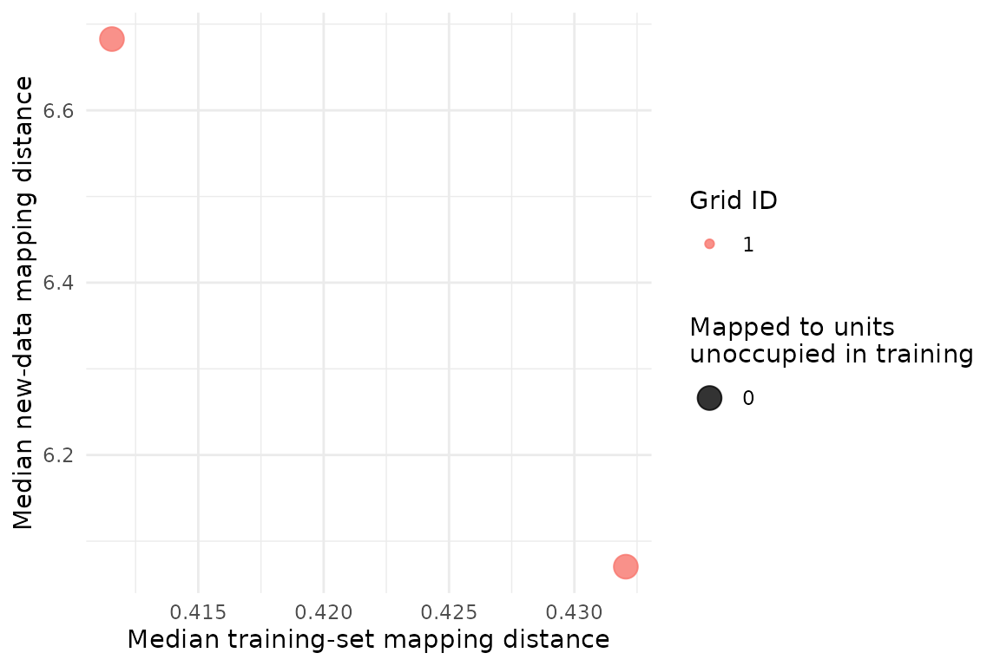

Respecting groups and monitoring domains in SOM validation
Shaowen Ye
Source:vignettes/design-aware-resampling.Rmd
design-aware-resampling.RmdWhy the resampling unit matters
Environmental and ecological tables often contain repeated observations from the same site, individual, transect, campaign or watershed. Treating those rows as independent can place closely related observations in both the analysis and assessment subsets. A model may then appear reproducible because it repeatedly sees the same sampling unit, not because the pattern transfers to a new unit.
SOMevidence stores the sampling hierarchy outside the
predictor matrix and requires the resampling design to be stated. The
example below creates a known three-class system with strong site-level
dependence. Class labels remain external to training.
library(SOMevidence)
grouped <- simulate_som_scenario(
"grouped_pseudoreplication",
n = 120,
p = 6,
n_groups = 20,
group_icc = 0.7,
seed = 101
)
grouped
#> <som_data>
#> samples: 120
#> layers : 1
#> id source: generated
#> - environment: 6 variables, 0.0% missing
#> design : group, external_labelRow resampling and site resampling answer different questions. The latter asks whether a partition can be reproduced after entire sites are withheld.
row_splits <- som_resamples(
grouped, method = "subsample", repeats = 3, prop = 0.8, seed = 102
)
site_splits <- som_resamples(
grouped, method = "group_subsample", repeats = 3, prop = 0.8, seed = 102
)
spec <- som_spec(
grids = list(c(3, 2), c(4, 3)),
seeds = c(103, 104),
rlen = 40,
k = 2:4
)Both workflows use the same SOM budget and preprocessing. Only the resampling unit changes.
row_result <- run_som_workflow(
grouped, spec, row_splits,
cross_models = c("kmeans", "ward")
)
site_result <- run_som_workflow(
grouped, spec, site_splits,
cross_models = c("kmeans", "ward")
)
row_result$partitions$stability
#> k scope n_pairs n_partitions n_complete_partitions min_observed_clusters
#> 1 2 analysis 66 12 12 2
#> 2 3 analysis 66 12 12 3
#> 3 4 analysis 66 12 12 4
#> n_pairs_evaluable median_joint_n median_joint_coverage median_ari ari_q025
#> 1 66 77 0.6416667 0.8422883 -0.08694017
#> 2 66 77 0.6416667 0.2107658 0.04482264
#> 3 66 77 0.6416667 0.4163832 0.20542576
#> ari_q975 median_ami ami_q025 ami_q975
#> 1 1.0000000 0.7334836 0.03327869 1.0000000
#> 2 0.7498954 0.4276810 0.21301548 0.7199418
#> 3 0.7331367 0.5598854 0.35534372 0.7290238
site_result$partitions$stability
#> k scope n_pairs n_partitions n_complete_partitions min_observed_clusters
#> 1 2 analysis 66 12 12 2
#> 2 3 analysis 66 12 12 3
#> 3 4 analysis 66 12 12 4
#> n_pairs_evaluable median_joint_n median_joint_coverage median_ari ari_q025
#> 1 66 78 0.65 0.7010256 0.0162294
#> 2 66 78 0.65 0.3515673 0.1008049
#> 3 66 78 0.65 0.2987112 0.1011727
#> ari_q975 median_ami ami_q025 ami_q975
#> 1 0.9330339 0.5757283 0.03367107 0.8662455
#> 2 0.7344795 0.4014499 0.18533753 0.6936857
#> 3 0.7106070 0.4090858 0.27542202 0.6681121These outputs should be compared as design sensitivities, not as an algorithm ranking. A difference shows that the inferential unit matters. It does not by itself identify which design matches a particular field study; that decision comes from how the observations were collected.
Mapping to a held-out monitoring domain
Leave-domain-out analysis addresses another question: does a map trained in some domains receive observations from a held-out domain at comparable distances and on units occupied during training?
shifted <- simulate_som_scenario(
"gradient",
n = 120,
p = 6,
n_domains = 3,
domain_shift = 1,
seed = 110
)
domain_splits <- som_resamples(
shifted,
method = "leave_domain_out",
domain = "domain"
)
domain_ensemble <- fit_som_ensemble(
shifted,
som_spec(c(4, 3), seeds = c(111, 112), rlen = 40, k = 2:4),
domain_splits
)
transfer <- audit_transfer(domain_ensemble)
transfer
#> <som_transfer_audit>
#> successful transfers: 6
#> median distance ratio: 15.144
#> median held-out coverage: 1.000
#> median new-unit rate : 0.000
plot(transfer)
The distance ratio and unoccupied-unit rate diagnose domain shift. They are not accuracy statistics, because an unsupervised map has no response label to predict. They also do not establish a causal explanation for the shift.
Map a later monitoring batch without refitting
An operational monitoring workflow may freeze a trained ensemble and map a later batch. The new data must have the same named layers and variables, but it may contain one or many observations. Each map applies its own training-derived preprocessing.
training_rows <- shifted$metadata$domain != "domain_03"
training <- som_data(
layers = lapply(
shifted$layers,
function(x) x[training_rows, , drop = FALSE]
),
id = shifted$metadata$id[training_rows]
)
new_batch <- som_data(
layers = lapply(
shifted$layers,
function(x) x[!training_rows, , drop = FALSE]
),
id = shifted$metadata$id[!training_rows],
domain = shifted$metadata$domain[!training_rows]
)
frozen_ensemble <- fit_som_ensemble(
training,
som_spec(c(4, 3), seeds = c(120, 121), rlen = 40, k = 2:4),
keep_models = TRUE
)
new_mapping <- map_som_ensemble(frozen_ensemble, new_batch)
new_mapping
#> <som_newdata_mapping>
#> new samples : 40
#> fits attempted : 2
#> fits mapped : 2
#> fits failed : 0
#> warnings : 0
#> node consensus : not computed across grids
new_mapping$summary
#> fit_id grid_id xdim ydim n_new n_mapped mapping_coverage
#> 1 full__g01_4x3_s120 1 4 3 40 40 1
#> 2 full__g01_4x3_s121 1 4 3 40 40 1
#> median_training_distance median_new_distance distance_ratio
#> 1 0.4320523 6.070372 14.05008
#> 2 0.4115560 6.682698 16.23764
#> unoccupied_unit_rate
#> 1 0
#> 2 0
plot(new_mapping)
Best-matching unit identifiers stay specific to each map. The package does not align nodes across different grids or turn distance shift into a hard class prediction.
Predefined temporal or spatial blocks
block_subsample expects unit to identify
blocks already defined from the study design. The package does not guess
a block length from row order. This keeps the scientific definition of a
season, campaign, reach or time window under analyst control and
prevents accidental dependence on file ordering.